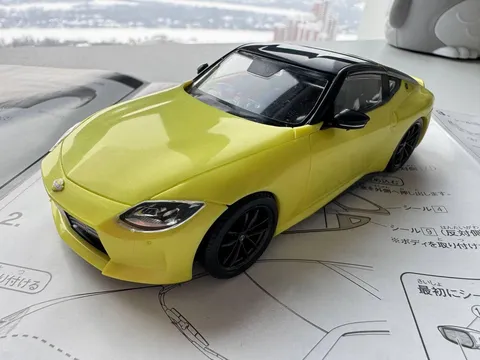
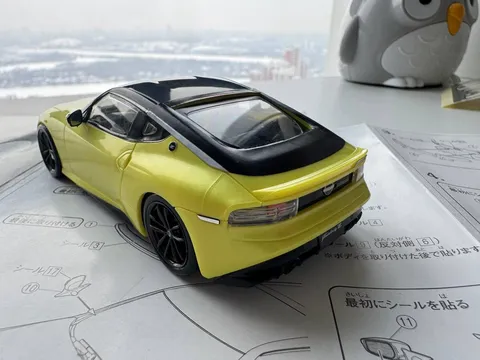
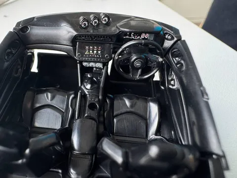
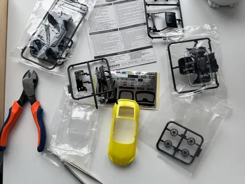

Аркадий Петрович еще 6 лет назад говорил, что Зетка валит и рулится. Даже Георгий Тумасович пару лет назад пересел со столь привычного s-chassis на z-chassis. Я решил, что и мне пора.
Посему в Форварде была куплена зетка - Fairlady новой генерации. Правда, из-за утильсбора пока что приходится довольствоваться не вполне настоящей зеткой, а сборной моделькой.
Зато трушная, с иероглифами, и строится за пару часов. Из необходимых инструментов - лишь кусачки и пинцет. С некоторыми деталями (и, особенно, наклейками) пальцами вообще никак не совладать, даже детскими. Но штука классная. И пока бэха ждет очереди на прием в студии тюнинха, #лёха_строит_зетку.
Но, вероятно, однажды эта зетка станет настоящей. Нужно лишь подождать, пока они станут проходными. Или взять 370z, тем более что по сути это почти один автомобиль, а по костям и шасси они, кажется, идентичны.
